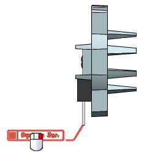
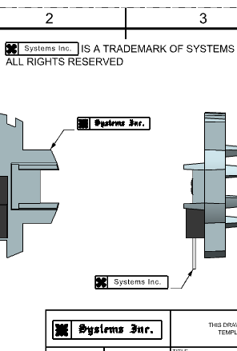

Replace the master symbol definition of unlocked custom symbols
-
Right-click the symbol attached to the electrical power transistor and choose Replace.

-
In the Replace Custom Symbol dialog box, in the Symbol Instance group, select the Replace All Instances of Selected Symbols
 check box.
check box.
-
In the Folder View group, expand the Custom Symbol Library node and select the Part Symbols folder.
-
In the Symbol View group, select the new_logo_label symbol and click OK.
-
Click OK to close the message box.
Notice that NX did not update the symbol instance attached to the heat sink and the one in the title block. This is because they are both locked.

If you want to update a locked symbol, you must first unlock it and then use the Replace command to associate it to a different master symbol.